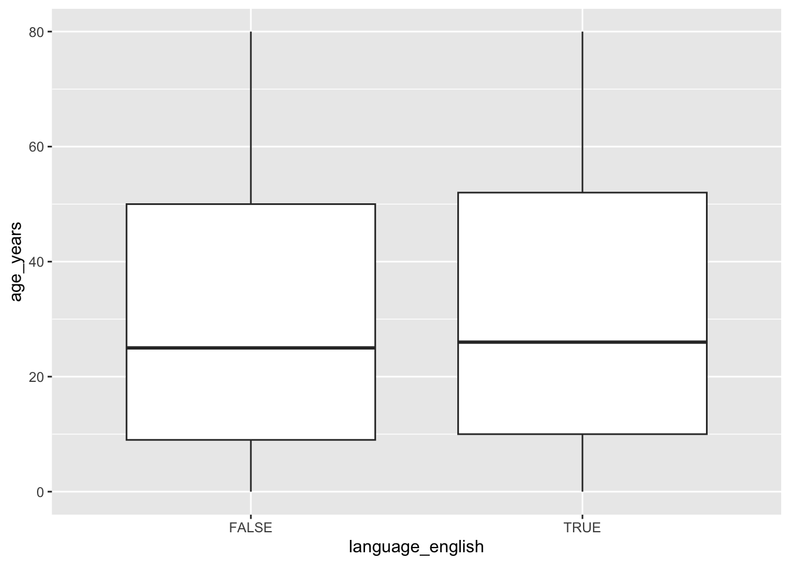
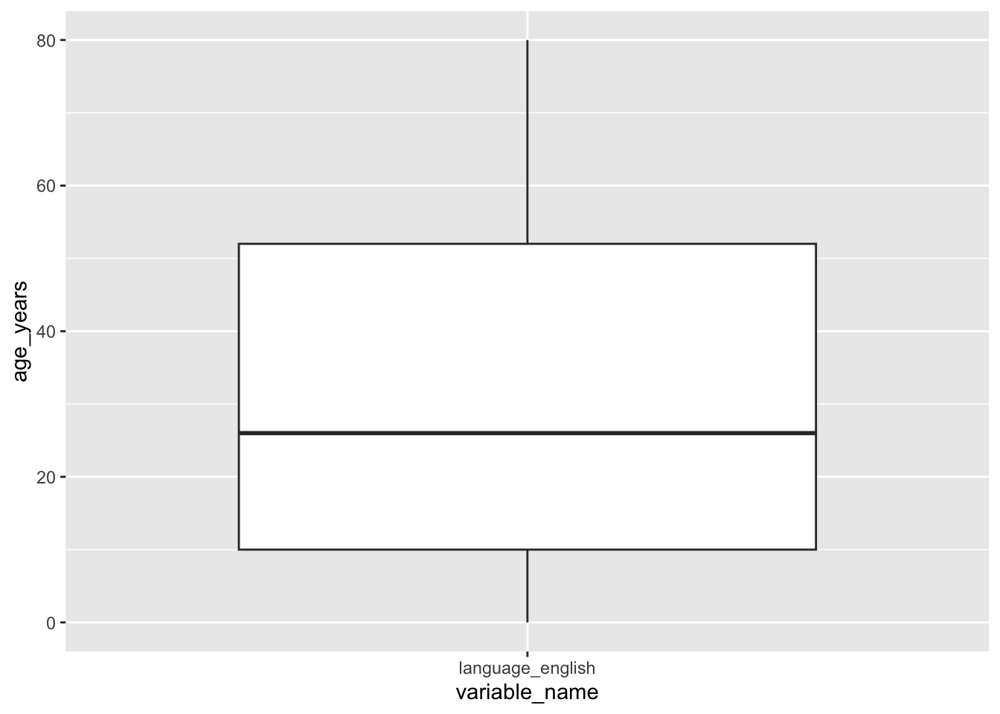
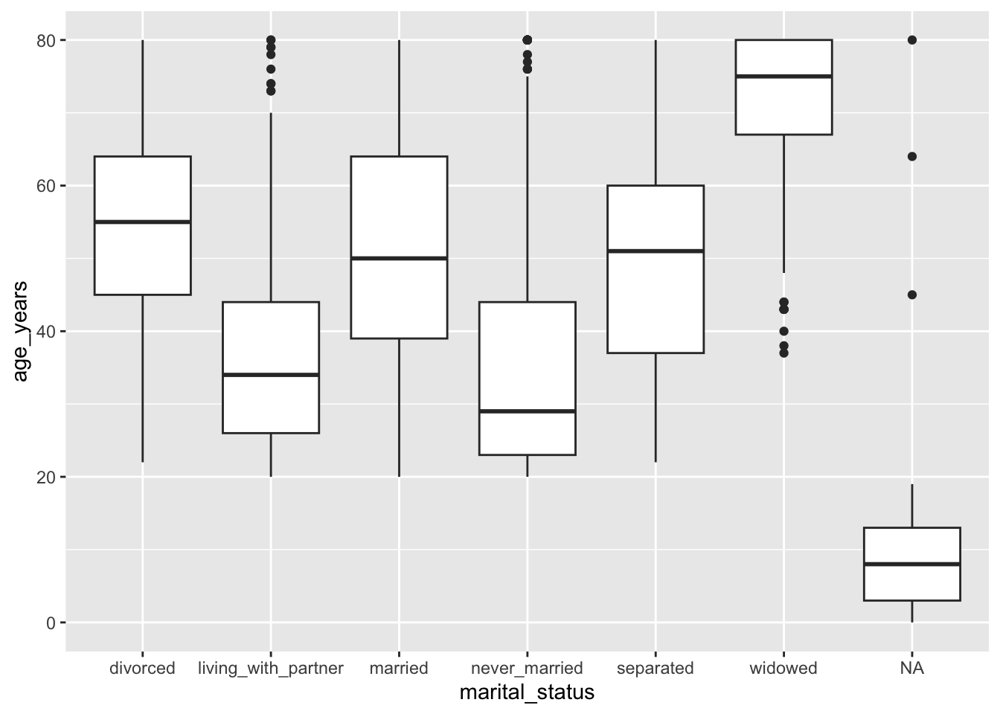
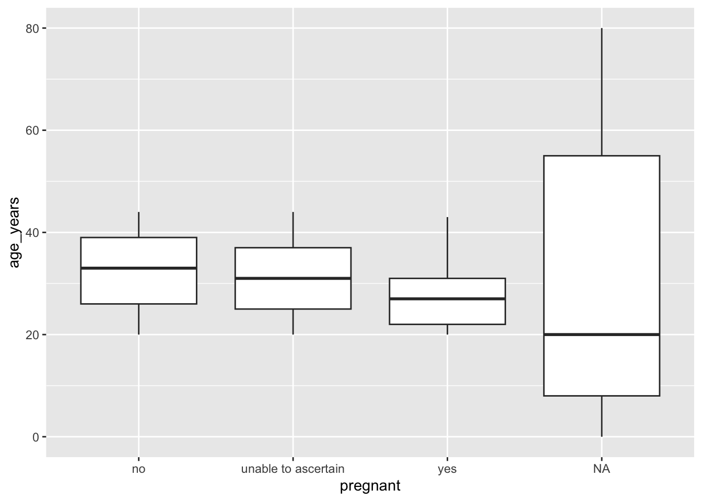
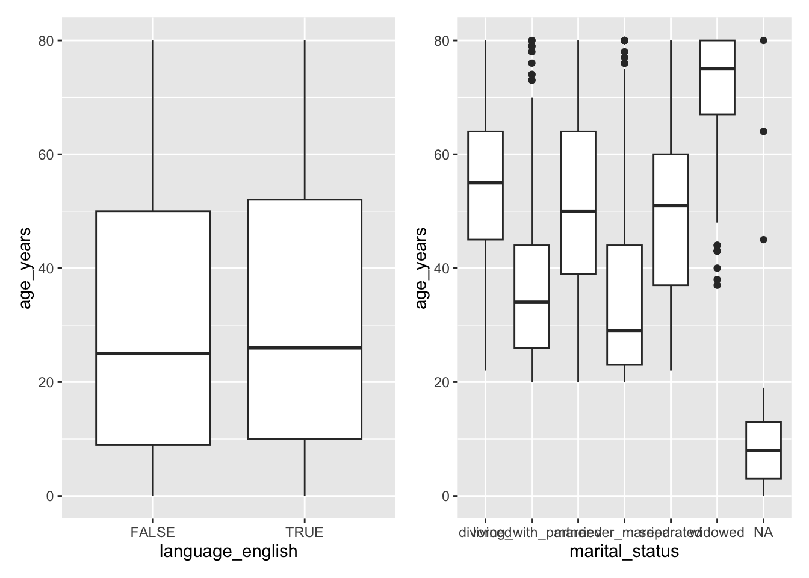
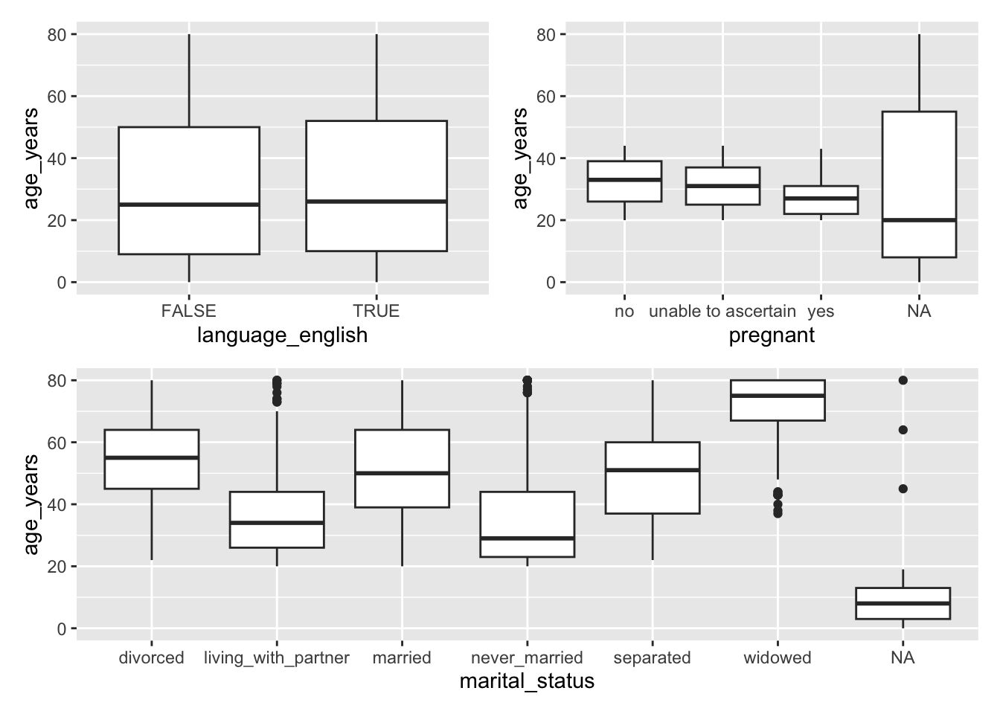
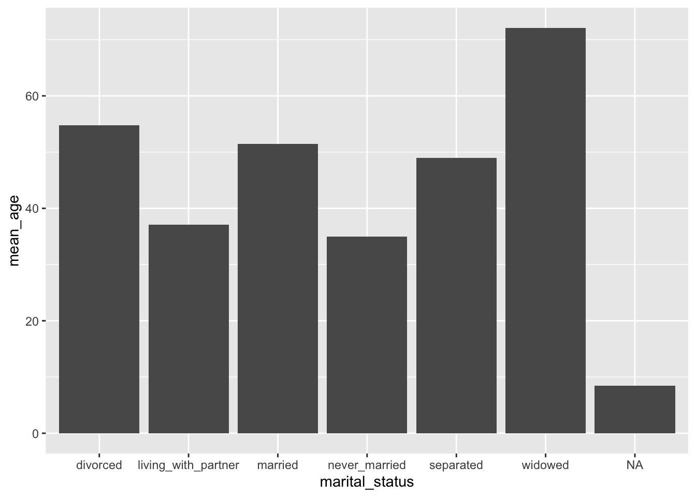
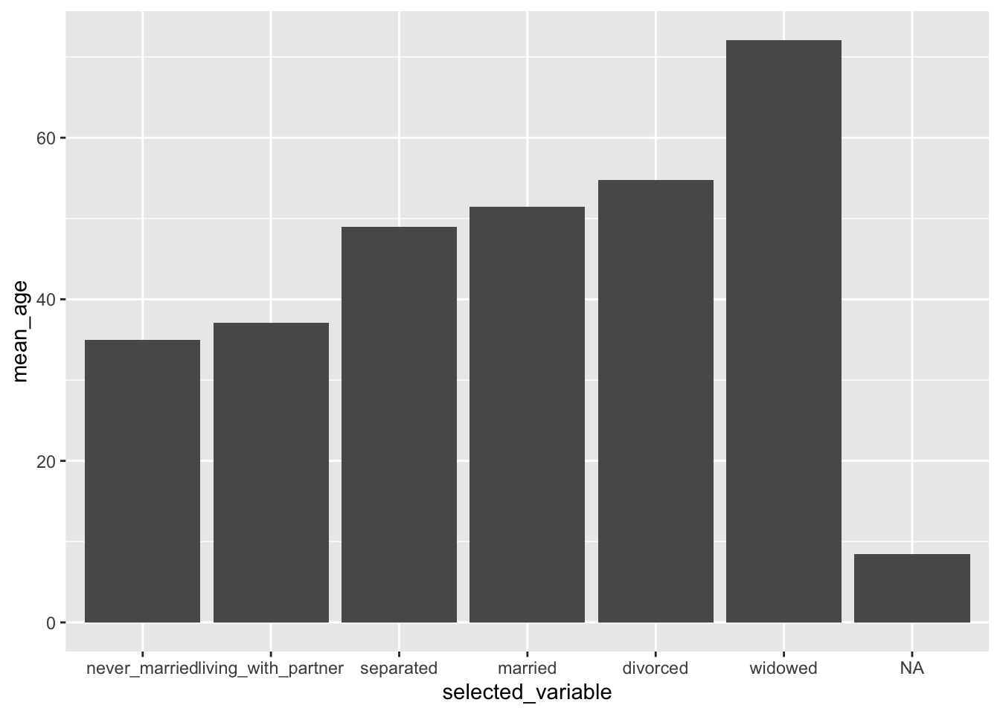

# define a function called `add_one()` that adds 1 to its argument, x
add_one <- function(x) {
x + 1
}Custom functions
A simple custom function
In this notebook, you will learn how to define your own functions.
The code that is run when you “call” your function is inside the curly parentheses.
# apply function add_one() to 5
add_one(5)[1] 6# apply function add_one() to 5 using a *named argument*
add_one(x = 5)[1] 6What happens when the body of your function contains two pieces of code?
# re-define add_one() with two lines of code: x - 1 and x + 1
add_one <- function(x) {
x - 1
x + 1
}# apply add_one to 5 again
add_one(5)[1] 6By default, any custom R function you create will automatically return the final result that is computed.
For this reason, it is common to explicitly provide a “return statement”.
# redefine add_one() but apply the return statement to x - 1 only
add_one <- function(x) {
return(x - 1)
x + 1
}# apply add_one to 5 again
add_one(5)[1] 4The general syntax of a custom function
The general syntax of a custom function is shown below:
fn_name <- function(arg) {
# code involving arg
return(object)
}Exercise
Write a function called “cube” that returns the cubic (^3) of the argument
# define function cube()
cube <- function(value) {
cubed_value = value^3
return(cubed_value)
}# apply cube() to 3
cube(value = 3)[1] 27Multiple arguments
To create a function with multiple arguments, you need to provide two arguments inside the function definition, separated by a comma. The function below has two arguments: x and y:
# define a function called add_x2y that computes x + 2y
add_x2y <- function(x, y) {
x + 2*y
}When you call this add_x2y(), you can then specify a value for each argument, separated by a comma:
# apply add_x2y() to x = 2 and y = 5
add_x2y(2, 5)[1] 12When you have multiple arguments, funny things can start to happen when you don’t name your arguments.
What do you think will happen if you first provide a named argument for the second argument y by specifying y = 2, and then provide an unnamed argument afterwards?
add_x2y(y = 2, 5)[1] 9R will be clever and it will first apply the named arguments by assigning y to the value 2, and then fill in the remaining argument, so x will be assigned to the value 5.
It is good practice to name your arguments if there is any chance for ambiguity.
# run add_x2y() with named arguments x = 2 and y = 5
add_x2y(x = 2, y = 5)[1] 12Note that when you provide named arguments, it technically doesn’t matter which order you provide them in (but this is not true when you don’t provide named arguments!)
# run add_x2y() with named arguments y = 5 and x = 2
add_x2y(y = 5, x = 2)[1] 12Again, note that even when you provide named arguments in a function call (e.g., in add_x2y(x = 2, y = 5)), you are not defining a global version of the arguments, i.e., there is no y defined:
yError in eval(expr, envir, enclos): object 'y' not foundWhat do you think will happen when you call add_x2y without any parentheses?
# run add_x2y
add_x2yfunction(x, y) {
x + 2*y
}
<bytecode: 0x12902b270>It will print out the definition of the function!
What do you think will happen when you call add_x2y with parentheses but no arguments?
add_x2y()Error in add_x2y(): argument "x" is missing, with no defaultYou get an error! We can fix this by providing “default” values for the arguments.
Default values
To provide default values for your arguments, you can assign the argument inside the function definition. In the example below, both x and y are given the default values of 1.
# redefine add_x2y() with default values for x and y (both 1)
add_x2y <- function(x = 1, y = 1) {
x + 2*y
}# call add_x2y() without any arguments
add_x2y()[1] 3What happens if we only provide some of the arguments?
# run add_x2y() with a single unnamed argument, 4
add_x2y(4)[1] 6# run add_x2y() with a single argument: y = 3
add_x2y(y = 3)[1] 7Exercise
Without using the mean() function, write a function called my_mean() that takes four values as its arguments and computes their mean. Ensure that each argument has a default of 0. Use your function to compute the mean of the values 4, 5, 2, 1.
How would you modify your function to take a single vector of length 4 as its argument instead of four separate arguments?
Solution
my_mean <- function(a = 0, b = 0, c = 0, d = 0) {
return((a + b + c + d) / 4)
}Note that when we run this function it is taking four separate arguments (rather than a vector, as the original mean function does):
my_mean(4, 5, 2, 1)[1] 3You can define a function that instead takes a single vector as its argument:
my_mean_vec <- function(vec) {
return(sum(vec) / length(vec))
}and then to run this function, you provide a vector by wrapping the four values inside c():
my_mean_vec(c(4, 5, 2, 1))[1] 3What happens if you apply your original my_mean() function to this vector?
my_mean(c(4, 5, 2, 1))[1] 1.00 1.25 0.50 0.25This is equivalent to assigning the argument a = c(4, 5, 2, 1), and then not providing any values for the b, c, and d arguments (so their default values are used). So the above code is equivalent to:
# (a + b + c + d) / 4
(c(4, 5, 2, 1) + 0 + 0 + 0) / 4[1] 1.00 1.25 0.50 0.25The fact that we haven’t told any of our functions what type of object the arguments should be means that the function will simply take whatever object it is given and try and run the code.
If/else statements
If statements
The following code defines a variable a, and then runs some conditional code that is only run if the condition a == 1 is TRUE.
# define a variable a containing 5
a <- 5
# if a is equal to 1, print out some text
if (a == 1) {
"a is 1"
}
# Then:
# 1. try the code again, with a equal to 1
# 2. replace the code that is run in the if statement with a mathematical computation
# 3. replace the code that is run in the if statement with a variable definition (e.g., define y <- 3)
a <- 1
# if a is equal to 1, print out some text
if (a == 1) {
y <- 3
}Unlike for a function, if you define a variable inside an if statement, then this variable will have been defined in our “global” environment too.
# Does y exist globally?
yElse statemenets
The “else” part of the “if/else” statement provides some code that will be run if the “if” condition is not TRUE.
# define a variable "a" containing 3
a <- 3
# if "a" equals 1, define y <- 3, else define y <- 9
if (a == 1) {
y <- 3
} else {
y <- 9
}# check what y was assigned to
y[1] 9Using “if” statements to provide custom errors for a function
The following uses an “if” statement to add a “stop condition” that throws an error when innapropriate arguments are provided
# add an "if" condition to throw an error if `a` is either non-numeric OR the length of `a` is greater than 1
my_mean <- function(a = 0, b = 0, c = 0, d = 0) {
# write your if statement here containing a stop() function
if (!is.numeric(a) | (length(a) != 1)) {
stop("'a' must be a numeric value of length 1")
}
return((a + b + c + d) / 4)
}Exercise
- Write a standalone if/else statement that checks whether the value in a variable called
ageis at least 18. If the age variable is 18 or older, your statement should return the character value of “You are eligible to vote” and if not, your statement should return “You are not eligible to vote”
age <- 21
if (age >= 18) {
"You are eligible to vote"
} else {
"You are not eligible to vote"
}[1] "You are eligible to vote"- Write a function that computes the area of a circle (
area = pi * radius^2) with the radius as its argument, and throws an error if a non-numeric or a negative radius value is given.
circle_area <- function(radius) {
if (!is.numeric(radius) | radius < 0) {
stop("'radius' must be a non-negative numeric value")
}
area <- pi * radius^2
return(area)
}Test your function on the following code
# the following should throw an error:
circle_area("4")Error in circle_area("4"): 'radius' must be a non-negative numeric valuecircle_area(-4)Error in circle_area(-4): 'radius' must be a non-negative numeric value# the following should NOT throw an error:
circle_area(4)[1] 50.26548Default argument options with match.arg()
Below, we give an example of providing multiple options to an argument.
# define a function add_x2y with three arguments:
# x: a numeric value with default value 1
# y: a numeric value with default value 1
# output_type: a character value with default value "numeric" and alternative option "character"
# in the body of the function:
# use match.arg() to ensure that output_type is one of the options provided
# use an if statement to modify the output based on the value of output_type
add_x2y <- function(x = 1, y = 1, output_type = c("numeric", "character")) {
# this line will set the default value of output_type to be "numeric"
# and will only allow options provided in the default vector
output_type <- match.arg(output_type)
# stop condition if x or y are not numeric
if (!is.numeric(x) | !is.numeric(y)) {
stop("'x' and 'y' must be numeric")
}
# computing my result
result <- x + 2 * y
# returning result in the format specified by output_type
if (output_type == "numeric") {
return(result)
} else if (output_type == "character") {
return(as.character(result))
}
}# apply add_x2y() to x = 2 and y = 3 and output_type = "character"
add_x2y(x = 2, y = 3, output_type = "character")[1] "8"# apply add_x2y() to x = 2 and y = 3 with no output_type specified
add_x2y(2, 3)[1] 8# apply add_x2y() to x = 2 and y = 3 and output_type = "logical"
add_x2y(2, 3, output_type = "logical")Error in match.arg(output_type): 'arg' should be one of "numeric", "character"Exercise
Write a function called calculate_area() that will calculate the area of the shape specified in the argument shape, which has options “circle”, “square”, and “triangle”. Your function will need to have the following additional arguments:
radiusfor computing the area of a circle (pi * radius^2),sidefor computing the area of a square (side^2),baseandheightfor computing the area of a triangle (height * base / 2).
Arguments that are not always required should have a default value of NULL. Your function should throw an error when you fail any value other than “circle”, “square” or “triangle” for the shape argument (you can use match.arg() to do this!).
Your function should throw an error when:
the ‘radius’ argument is not provided when
shape == "circle"the ‘side’ argument is not provided when
shape == "square"the ‘base’ and ‘height’ arguments are not provided when
shape == "triangle"
calculate_area <- function(shape = c("circle", "square", "triangle"),
radius = NULL,
side = NULL,
base = NULL,
height = NULL) {
shape = match.arg(shape)
# error statements
if (shape == "circle" & is.na(radius)) {
stop("'radius' required for 'circle' shape")
}
if (shape == "square" & is.na(side)) {
stop("'side' required for 'square' shape")
}
if (shape == "triangle" & (is.na(base) | is.na(height))) {
stop("'base' and 'height' required for 'triangle' shape")
}
# compute the area
if (shape == "circle") {
area <- pi * radius^2
} else if (shape == "square") {
area <- side^2
} else if (shape == "triangle") {
area <- base * height / 2
}
return(area)
}Tidy evaluation for writing tidyverse-style functions
Sometimes you want to write a function whose argument is a column of a data frame without quotes (i.e., in the tidyverse style) so that you can use it in a tidyverse function.
# load in the tidyverse and demographics NHANES data
library(tidyverse)── Attaching core tidyverse packages ──────────────────────── tidyverse 2.0.0 ──
✔ dplyr 1.1.4 ✔ readr 2.1.5
✔ forcats 1.0.0 ✔ stringr 1.5.1
✔ ggplot2 3.5.1 ✔ tibble 3.2.1
✔ lubridate 1.9.3 ✔ tidyr 1.3.1
✔ purrr 1.0.2
── Conflicts ────────────────────────────────────────── tidyverse_conflicts() ──
✖ dplyr::filter() masks stats::filter()
✖ dplyr::lag() masks stats::lag()
ℹ Use the conflicted package (<http://conflicted.r-lib.org/>) to force all conflicts to become errorsdemographics <- read_csv("data/demographics.csv")Rows: 10175 Columns: 19
── Column specification ────────────────────────────────────────────────────────
Delimiter: ","
chr (5): interview_examination, gender, race, marital_status, pregnant
dbl (9): respondent_id, age_years, age_months_sc_0_2yr, six_month_period, ag...
lgl (5): served_active_duty_us, served_active_duty_foreign, born_usa, citize...
ℹ Use `spec()` to retrieve the full column specification for this data.
ℹ Specify the column types or set `show_col_types = FALSE` to quiet this message.# take a look at the demographics data
head(demographics)# A tibble: 6 × 19
respondent_id interview_examination gender age_years age_months_sc_0_2yr race
<dbl> <chr> <chr> <dbl> <dbl> <chr>
1 73557 both interview and e… male 69 NA black
2 73558 both interview and e… male 54 NA white
3 73559 both interview and e… male 72 NA white
4 73560 both interview and e… male 9 NA white
5 73561 both interview and e… female 73 NA white
6 73562 both interview and e… male 56 NA mexi…
# ℹ 13 more variables: six_month_period <dbl>, age_months_ex_0_19yr <dbl>,
# served_active_duty_us <lgl>, served_active_duty_foreign <lgl>,
# born_usa <lgl>, citizen_usa <lgl>, time_in_us <dbl>, education_youth <dbl>,
# education <dbl>, marital_status <chr>, pregnant <chr>,
# language_english <lgl>, household_income <dbl>Notice that when we refer to the variables from our data frame in the context of the tidyverse (including ggplot2), we do not use quotes around the column names:
# compute boxplots for the age_years distribution across different levels of the language_english variable
demographics |> ggplot() +
geom_boxplot(aes(x = language_english,
y = age_years))
Let’s try and turn this into a function so we can create boxplots comparing the age distribution across all of the levels of other categorical variables without having to copy-and-paste the code over and over again.
In this first attempt, we use variable_name as the argument:
# turn the above boxplot code into a function called createBoxplots()
createBoxplots <- function(variable_name) {
demographics |> ggplot() +
geom_boxplot(aes(x = variable_name,
y = age_years))
}# try to apply createBoxplots() to the language_english column
createBoxplots(language_english)Error in `geom_boxplot()`:
! Problem while computing aesthetics.
ℹ Error occurred in the 1st layer.
Caused by error:
! object 'language_english' not foundcreateBoxplots("language_english")
The issue is that ggplot wants us to refer to the column names without strings, but our custom function doesn’t know how to find our column name variable that we provide.
We can use tidy evaluation ({ var_name }) to solve this problem.
# update our createBoxplots() function so that it uses tidy_evaluation
createBoxplots <- function(variable_name) {
demographics |> ggplot() +
geom_boxplot(aes(x = {{ variable_name }},
y = age_years))
}And now it works:
# apply createBoxplots() to the language_english column
createBoxplots(language_english)
Let’s use our function on a few different columns to make sure:
# apply createBoxplots() to the marital_status column
createBoxplots(marital_status)
# apply createBoxplots() to the pregnant column
createBoxplots(pregnant)
Tip: Using patchwork to patch together plots
The patchwork library can be used to create custom grids of ggplot objects (be sure to expand your plot window if the plots aren’t showing up properly):
# load the patchwork library
library(patchwork)
# create a grid of the language_english and marital_status boxplots
createBoxplots(language_english) + createBoxplots(marital_status)
# create a grid of the language_english and pregnant boxplots
# on top with the marital_status boxplots underneath
(createBoxplots(language_english) + createBoxplots(pregnant)) / createBoxplots(marital_status)
Exercise
Create a function called createOrderedBars() that takes a categorical column from demographics as its argument and creates a bar chart for the average age for each level of the variable.
Hint: Some example code for computing the average age for each level of the marital_status variable and creating a bar chart is shown below:
demographics |>
group_by(marital_status) |>
summarize(mean_age = mean(age_years)) |>
ggplot() +
geom_col(aes(x = marital_status,
y = mean_age))
Challenge activity: Arrange the bars in ascending order, and provide an argument called ascending that allows the user to specify whether or not the bars will be arranged in ascending order.
Solution
Note that you’ll want to use geom_col() instead of geom_bar() to create bar charts where the bars have the specific height provided in the y-variable.
createOrderedBars <- function(variable_name) {
demographics |>
# group by the column provided
group_by({{ variable_name }}) |>
# compute the mean age
summarize(mean_age = mean(age_years)) |>
# create the bar plot
ggplot() +
geom_col(aes(x = {{ variable_name }},
y = mean_age))
}createOrderedBars(marital_status)Challenge solution
To arrange the bars in ascending order of mean_age, you first need to convert the categorical variable itself to a factor whose levels are in the order that you want the bars to appear. You can do this by arranging the rows of your data frame in order of mean_age and then using fct_inorder() to convert your variable to a factor with levels match the increasing order of mean_age.
createOrderedBars <- function(variable_name, ascending = TRUE) {
mean_age <- demographics |>
# group by the column provided
group_by({{ variable_name }}) |>
# compute the mean age
summarize(mean_age = mean(age_years))
if (ascending) {
mean_age <- mean_age |>
# arrange in increasing order of mean_age
arrange(mean_age) |>
# modify selected_variable so that it is a factor whose levels are in
# increasing order of mean_age
mutate(selected_variable = fct_inorder({{ variable_name }}))
} else {
mean_age <- mean_age |>
mutate(selected_variable = {{ variable_name }})
}
# create the bar plot
mean_age |>
ggplot() +
geom_col(aes(x = selected_variable,
y = mean_age))
}createOrderedBars(marital_status, ascending = TRUE)
createOrderedBars(marital_status, ascending = FALSE)createOrderedBars(marital_status)